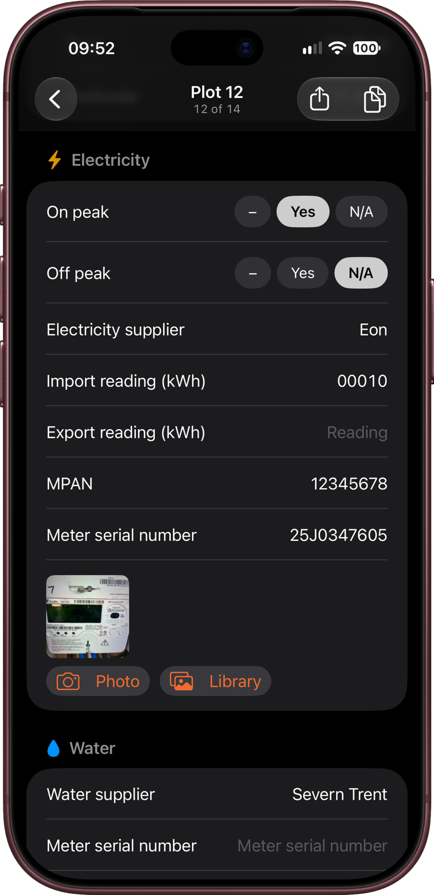
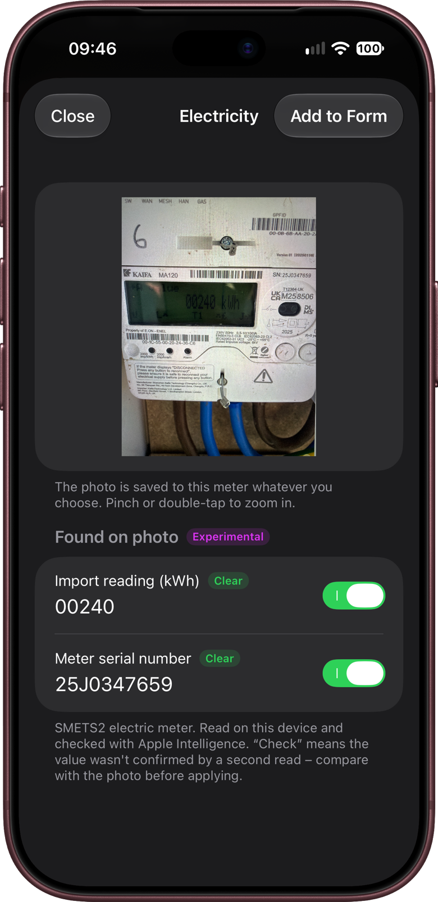
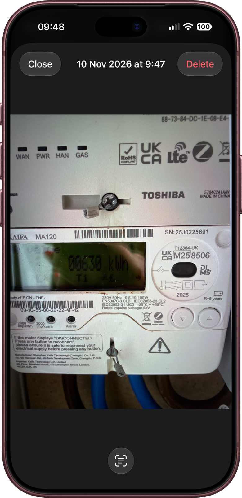
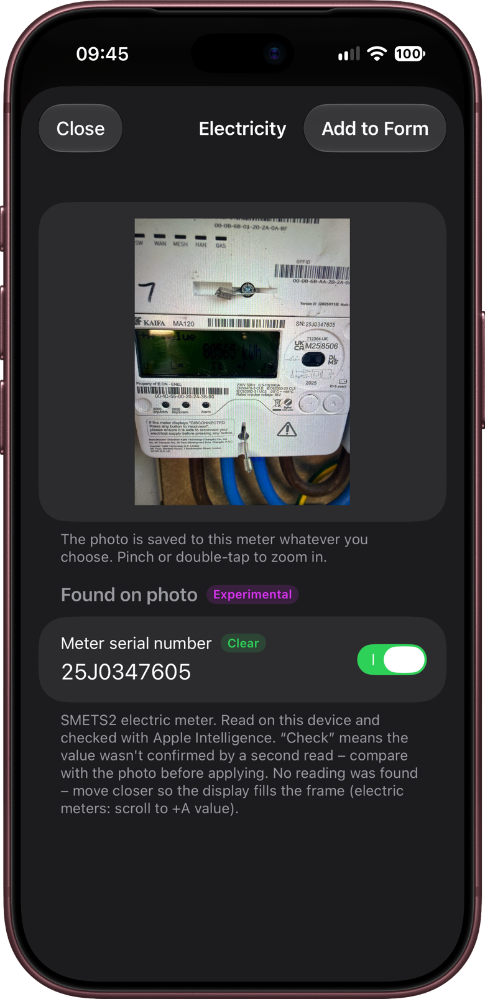
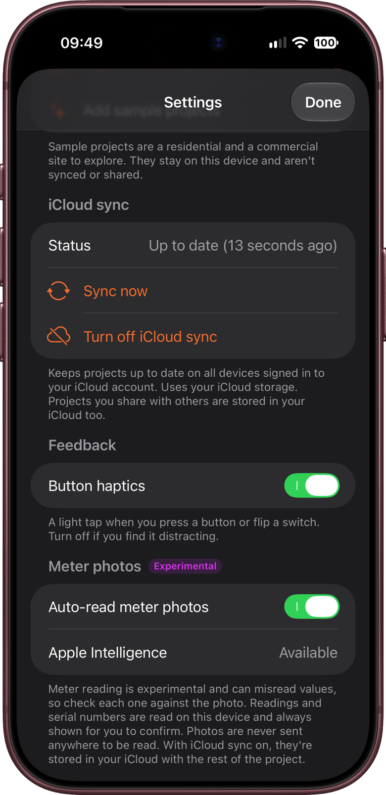

This chapter covers the Meters part of a plot's form: typing readings and serial numbers, adding meter photos, and letting KeyCheck read the numbers from a photo for you.
Meter reading from photos is new and marked Experimental in the app. It's usually right, but it can misread a number, so KeyCheck always shows you what it found and lets you check it before anything goes on the form.
The meters on the form
Each meter the site has gets its own section on the plot's form, with its own icon and colour. The meters and their boxes are chosen in Project setup → Form items (chapter 3). To start with, they are:
| Meter | Boxes |
|---|---|
| Electricity | On peak, Off peak, Electricity supplier, Import reading (kWh), Export reading (kWh), MPAN, serial number. |
| Gas | Gas supplier, Meter reading (m³), MPRN, serial number. |
| Water | Water supplier, serial number, Meter reading (m³). |
| Solar PV | Generation serial number, Generation reading (kWh). |
A few terms you'll see:
- MPAN (electricity) and MPRN (gas) are the supply numbers that identify the property's supply. They're usually on the meter or the supplier's paperwork.
- Import is the electricity the home uses from the grid. Export is electricity sent back, for example from solar panels. Most meters only need the import reading.
- On peak and Off peak are for meters with day and night rates. Tap Yes or N/A for each.
Gas only appears if the project has a gas supply, and Solar PV only if it's switched on (chapter 3).
Typing a reading
Tap a box and type. Reading boxes open a number keypad.
A meter counts as done in What's left (chapter 4) once one of its readings is filled in. Serial numbers, supply numbers and suppliers are recorded on the handover form but don't count towards the ring.
Saving typing
- Suppliers: the supplier boxes are marked Same on every plot, so Copy from and Apply setup to several (chapter 4) copy them from plot to plot. Readings and serial numbers are never copied.
- Serial numbers and supply numbers: if the client's plot schedule lists MPANs, MPRNs or meter serial numbers, import them from a spreadsheet before you go to site (chapter 3).
Adding a meter photo
A photo of the meter is the best record of the reading on the day. Under each meter's boxes:
- Tap Photo to take a picture with the camera.
- Tap Library to choose one you've already taken, for example if you photographed all the meters first and are filling in the forms afterwards.
(On an iPad without a camera, there's just Add meter photo.)
The photo is saved to that meter straight away, and shows as a small picture under the boxes. A photo from your library keeps the date and time it was taken. You can add more than one photo to a meter, for example one of the display and one of the serial number.
Meter photos appear on the plot's handover PDF, beside the readings (chapter 10).

To look at a photo, tap it. The photo opens full screen, with the date and time it was taken at the top. To delete it, tap Delete.
Letting KeyCheck read the photo
As soon as you add a photo, KeyCheck reads it and opens a screen named after the meter, for example Electricity. After a moment it shows what it Found on photo: usually the reading and the serial number, and the MPAN if it's printed on the meter.
- Check each value against the photo at the top. Pinch or double-tap the photo to zoom in.
- Each value has a label:
- Clear: KeyCheck read it the same way twice, so it's very likely right.
- Check: KeyCheck isn't sure. Compare it carefully with the photo.
- If a value is wrong, tap it and correct it.
- Each value has a switch. Values for empty boxes are switched on. If a box on the form already has something in it, the value says Currently …, turn on to replace and is switched off, so nothing you've typed is replaced unless you choose to.
- Tap Add to Form to fill in the values that are switched on. Or tap Close to leave the form as it was.
Either way, the photo stays saved to the meter.

If KeyCheck can't find anything, it says so. Tap Done and type the values yourself.
Warnings
If the photo looks like a different type of meter, KeyCheck shows an orange warning. For example: "This looks like a Gas meter, but it's being added to Electricity." It's there to catch a mix-up before it reaches the handover form. If KeyCheck is wrong, ignore the warning and carry on.
On electricity meters, it may also tell you the display is showing the export reading rather than the import. Press the button on the meter until it shows the import (often labelled +A) and take the photo again.
Reading a saved photo again
To read a photo again, for example one you added with automatic reading turned off, tap the photo, then tap Read meter (the button at the bottom of the screen, which looks like a page inside a frame).

Tips for a good reading
- Get close, so the display and the serial number fill most of the photo.
- Hold the phone square on to the display to avoid glare and reflections. Shade the display with your hand if the sun is on it.
- Make sure the display is lit. Smart meters often go dark after a few seconds: press a button to wake them.
- On electricity meters, show the import reading (+A), not the export.
- If a reading comes back as Check, take a second, closer photo rather than guessing.
If KeyCheck finds the serial number but not the reading, it says so under the values and suggests moving closer:

Apple Intelligence
On iPhones and iPads that support Apple Intelligence, with it turned on, KeyCheck also uses it to double-check what it read. This can make readings more accurate. It still runs entirely on your device.
To see whether it's being used, go to Settings → Meter photos. Apple Intelligence shows Available, or Not available – using text rules only. Meter reading works either way.
Turning off automatic reading
If you'd rather type every reading yourself, go to Settings → Meter photos and turn off Auto-read meter photos. Photos are then saved to the meter without being read. You can still read any photo later by tapping it and tapping Read meter at the bottom of the screen.

Privacy
Meter photos are read on your device only. They're never sent anywhere to be read, and KeyCheck never fills in the form without showing you the values first.
With iCloud sync off, photos stay on your device. With it on, they're stored in your own iCloud with the rest of the project, and shared with anyone you share the project with (chapter 12).
Communal meters
Meters that serve a whole block or site, such as a landlord supply or EV chargers, are recorded once for the project, as Communal meters. Photos and reading work the same way. Chapter 7 explains them.
Employer's agents and contract administrators can open a plot's meter photos to check a reading without a site visit, and What's left shows which plots still need readings. Before the first handover, importing the MPANs, MPRNs and serial numbers from the client's schedule (chapter 3) means the site team only need to record the readings.